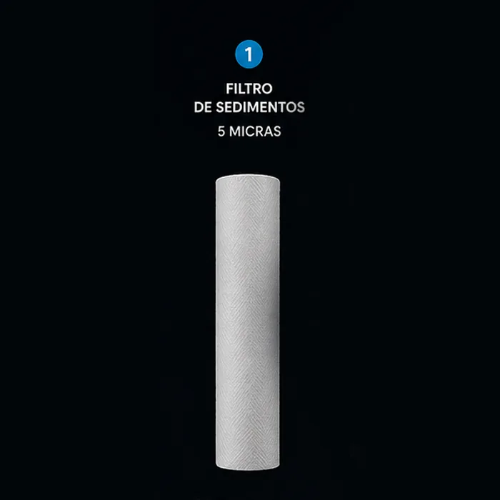
Capa 1 Sedimentos 5 micras Retiene arena, oxido, tierra, suciedad y particulas grandes.
Filtro RO de encimera
Purificador de agua PRO HERO 10X
Purificador de Agua de Osmosis Inversa de Encimera con produccion 100GPD para limpiar el agua, reducir olor y sabor a cloro, mejorar el sabor, alcalinizar y aportar minerales para una experiencia diaria mas fresca.
100GPD produccion
5 etapas
Quita olor a cloro
Alcaliniza + minerales
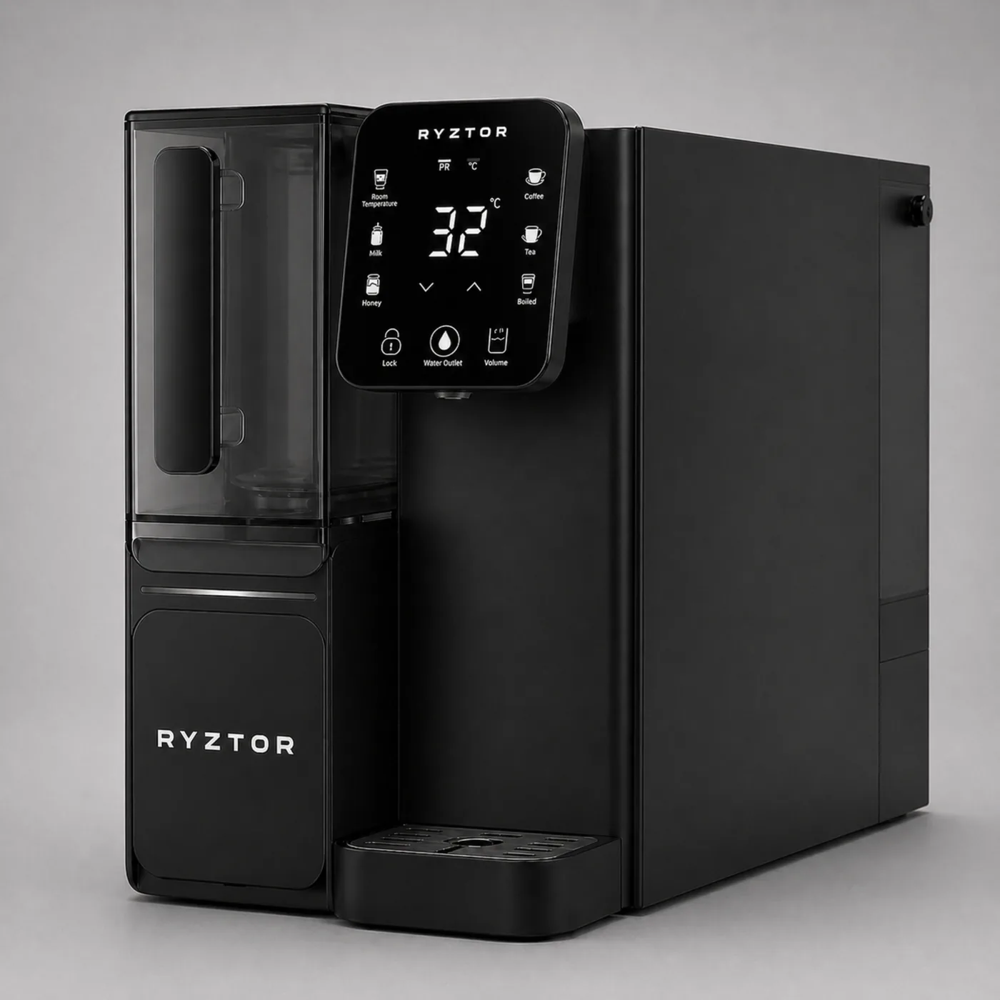
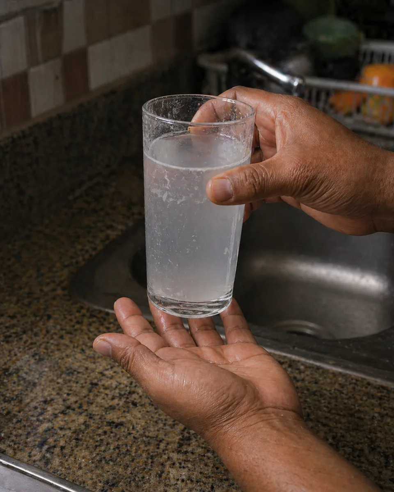
Resultado
(0) cloro en el sabor diario.
Ayuda a eliminar el olor y sabor a cloro para que el agua se sienta mas fresca desde el primer vaso.
Mejor saborpara tomar agua todos los dias.
Cafe y tesin sabor quimico ni olor fuerte.
Compara antes/despuesoler y probar hace que el beneficio sea evidente.
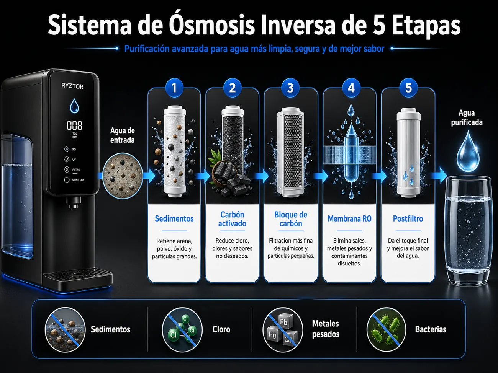
Filtracion
RO de 5 etapas para agua mas limpia.
La osmosis inversa trabaja por etapas para retener sedimentos, reducir olores, sabores no deseados y particulas antes del consumo.
Filtracion completamas avanzada que una jarra comun.
Para tomar y cocinaragua mas confiable para el uso diario en casa.
Mas tranquilidadpara familia, cocina y oficina.
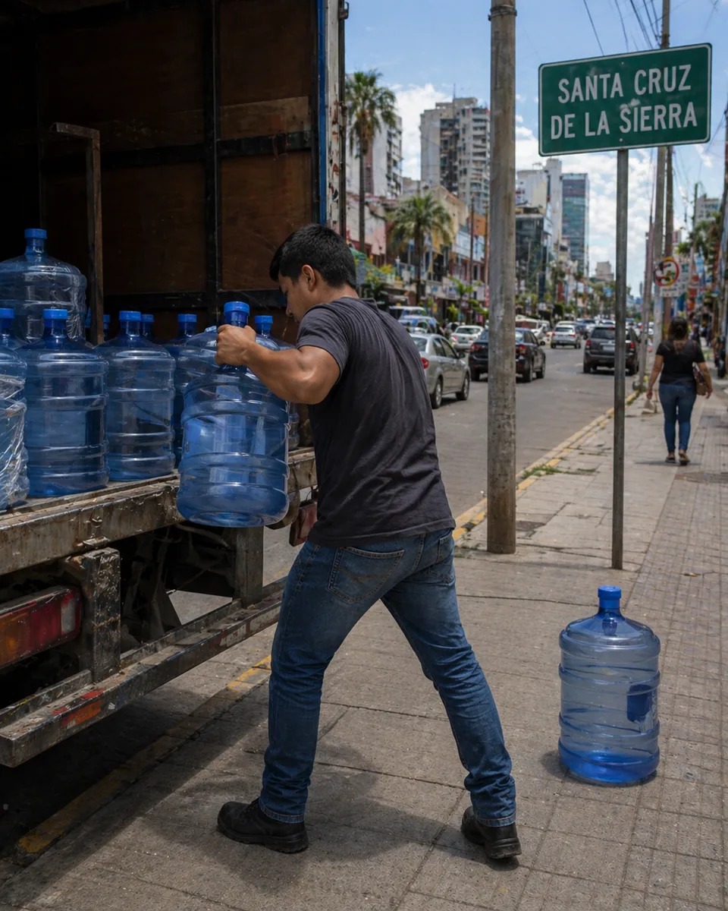
Costo
Menos bidones, menos carga, menos gasto.
En vez de comprar bidones una y otra vez, el hogar produce agua purificada en casa y reduce el gasto repetido.
Ahorro mensualfrente a compras constantes de agua.
Mas tiemposin pedir, esperar ni cargar bidones.
Menos plasticoevita bidones calentados por el sol y almacenados en casa.
Ahorro familiar
Una familia compra 8 a 12 bidones al mes.
Si cada recarga cuesta Bs 20, el gasto mensual queda entre Bs 160 y Bs 240. Ademas, la primera vez normalmente se paga el bidon retornable: Bs 50 por envase, antes de empezar a recargar.
Bs 160-240recargas mensuales
Bs 400-600costo inicial por 8 a 12 bidones
Bs 1.920-2.880recargas al año
Primer mes pesadobidon retornable + recarga puede subir el desembolso inicial.
Gasto que se repitecada mes vuelve la compra de agua, aunque ya se tenga el envase.
Argumento de ventael purificador convierte ese gasto repetido en agua producida en casa.
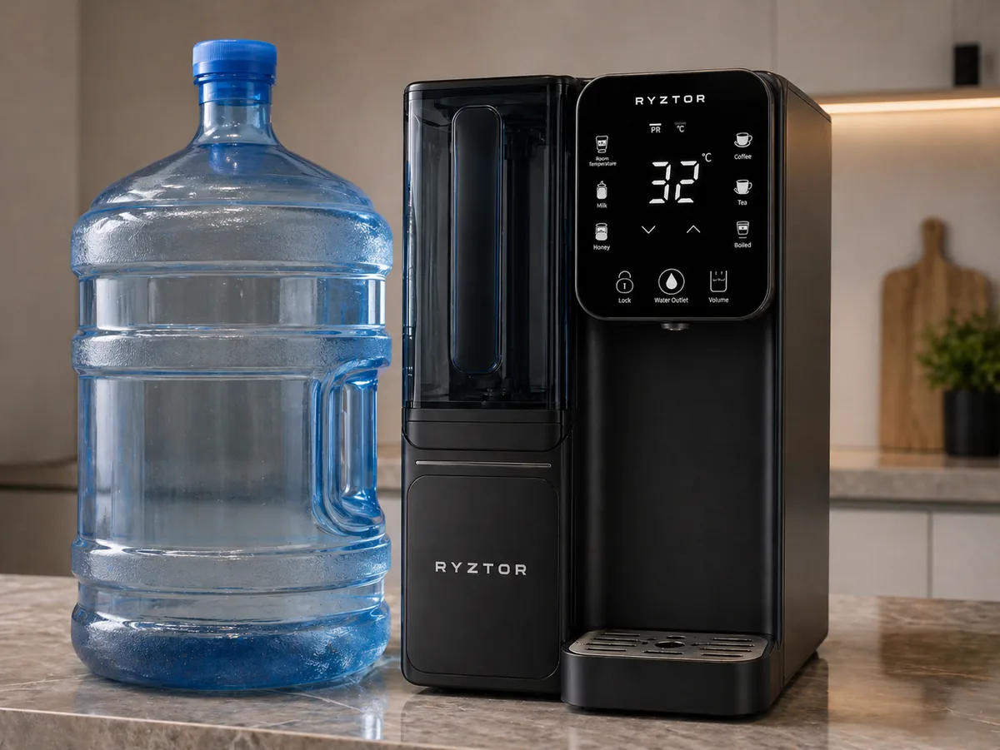
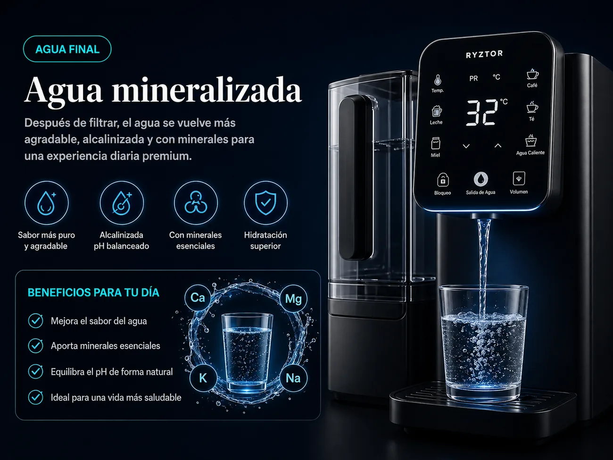
Agua final
Mineralizada, alcalinizada y mas agradable.
Despues de filtrar, el agua se vuelve mas suave al paladar y suma minerales para una experiencia diaria premium.
Con mineralespara una sensacion de agua mas completa.
Sabor mas agradableideal para tomar todos los dias.
Uso diarioun beneficio que se repite vaso tras vaso.
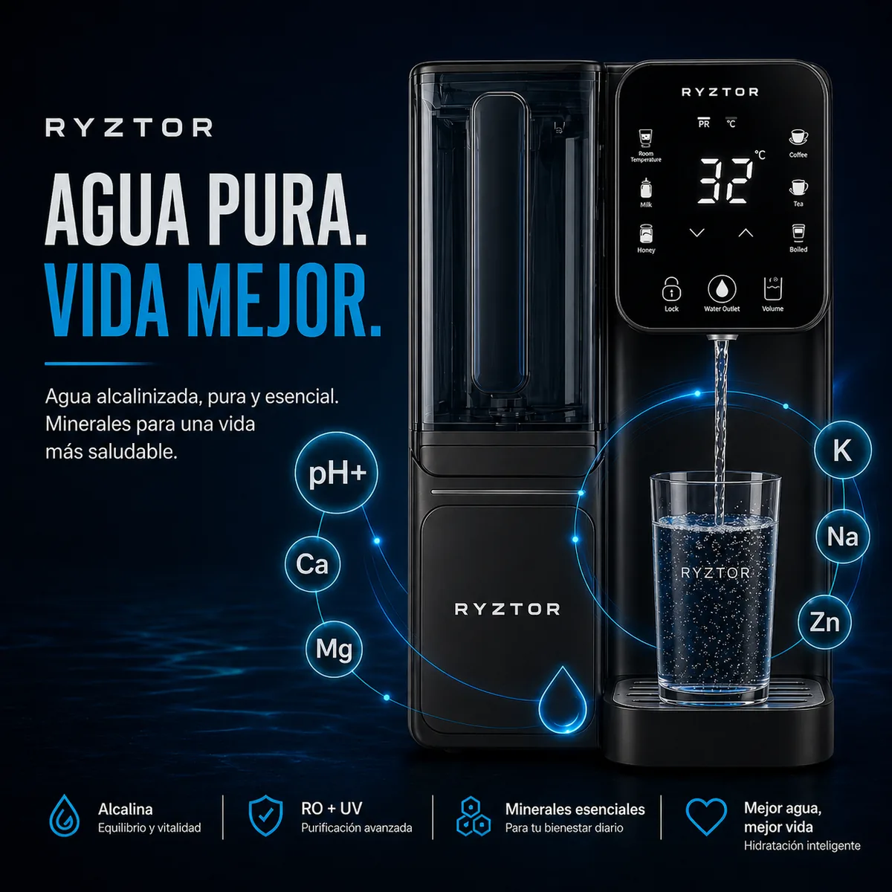
pH+
Agua alcalina con pH mas alto y minerales.
La alcalinizacion eleva el pH del agua y puede darle un sabor mas suave, con minerales añadidos despues de la filtracion.
pH mas altoagua menos acida en comparacion con agua comun.
Minerales añadidosCa, Mg, Na y K despues de filtrar.
Sabor mas suavemenor acidez percibida al tomarla.
Demo real
El video muestra el poder visual de la filtracion.
La demostracion es directa: se coloca una bebida oscura tipo cola y el sistema la procesa hasta mostrar agua mucho mas clara. Para vender e invertir, una prueba visual vale mas que una explicacion larga.
Demostracion inmediatael inversionista y el cliente ven el cambio en segundos.
Impacto visualconvierte una explicacion tecnica en evidencia facil de entender.
Argumento de ventaideal para redes, llamadas, demostraciones y cierres uno a uno.
Oportunidad de inversion
Producto importable con margen alto y recompra.
La oportunidad esta en traer un equipo con beneficio demostrable, precio premium y consumo recurrente en filtros. El inversionista entra en un producto tangible, medible y facil de presentar.
+300%margen obtenido por unidad
3xventa, filtros y referidos
1demo para defender el precio
Demanda ampliaagua limpia para hogares, oficinas y negocios.
Ingreso recurrentefiltros y mantenimiento despues de la primera venta.
Margen atractivoespacio para publicidad, comisiones y utilidad.
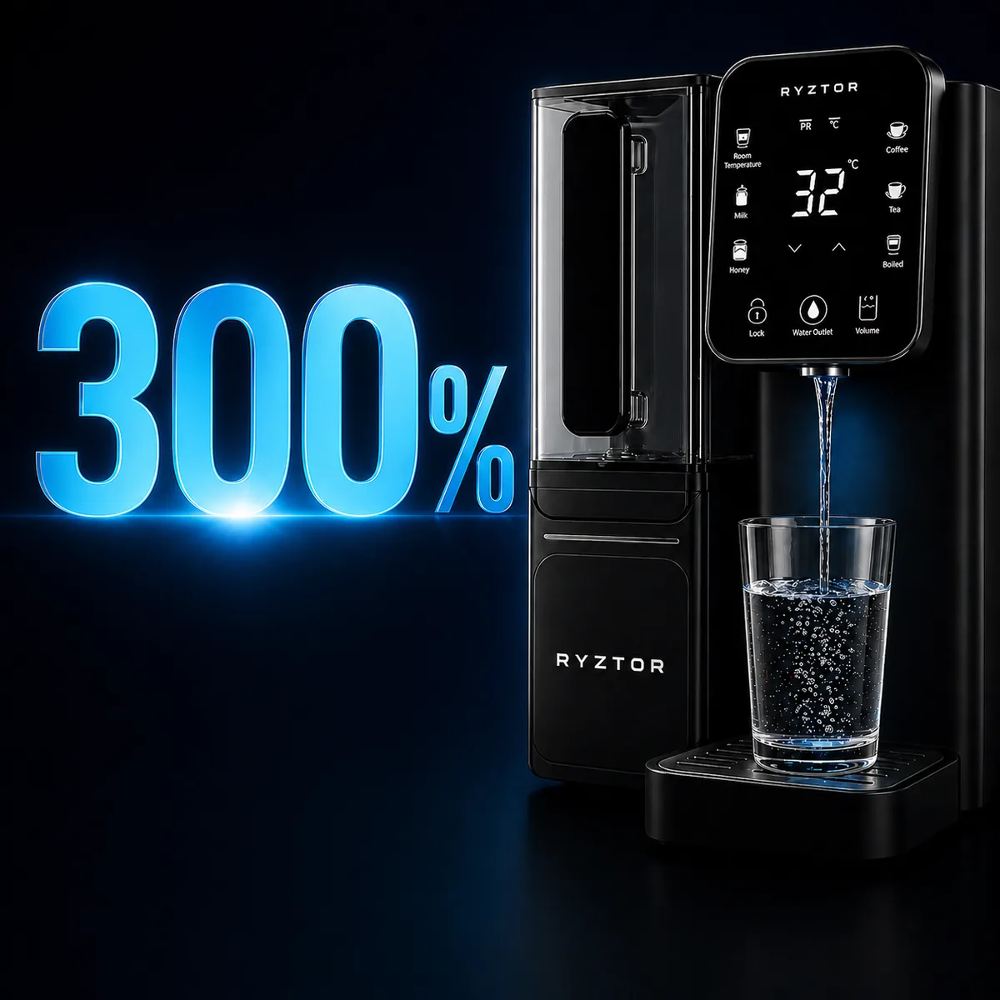
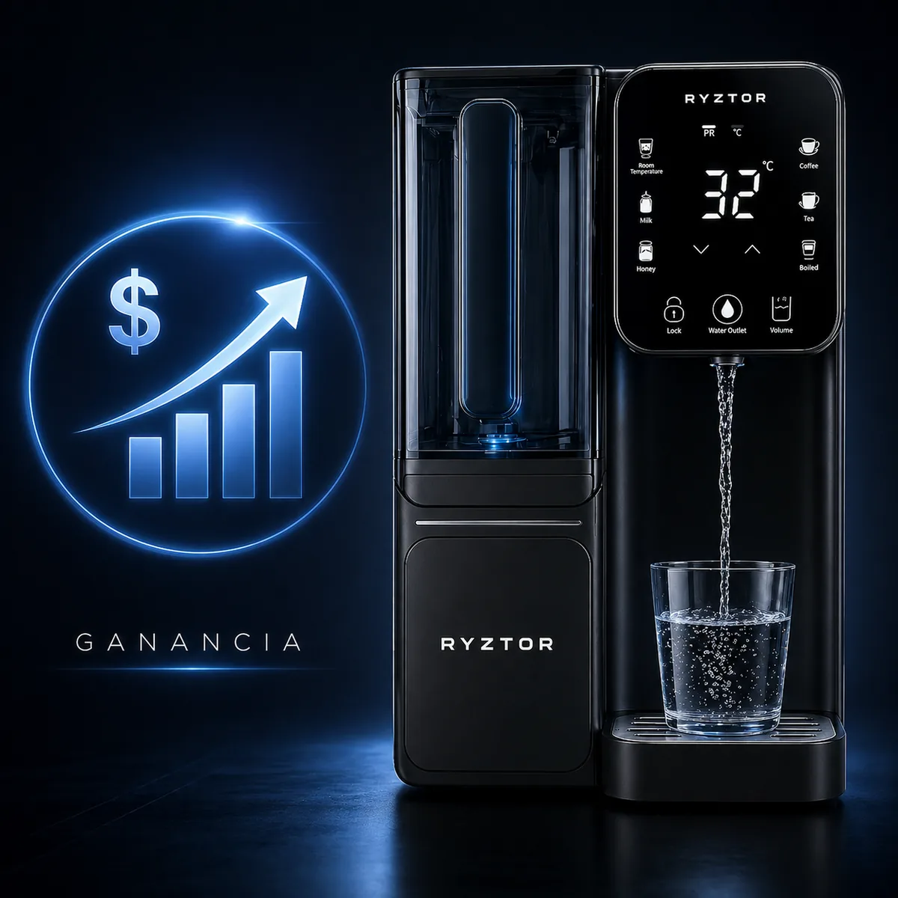
Caso unitario para inversionista
Una venta puede dejar Bs 3.500 de ganancia bruta.
Con costo estimado de Bs 1.500 por equipo y precio de venta recomendado de Bs 5.000, cada unidad deja una ganancia bruta de Bs 3.500 antes de publicidad, comisiones y logistica local.
Bs 1.500costo del producto
Bs 5.000venta recomendada
Bs 3.500ganancia bruta
Formula transparenteprecio de venta menos costo de importacion.
Margen para operarpermite cubrir marketing, comisiones y soporte.
Pitch defendibleel valor se demuestra con agua, filtros y pantalla TDS.
Recompra del cartucho
La utilidad no termina con la venta del equipo.
Despues de instalar el purificador, el cliente necesita reemplazar el cartucho segun uso y calidad del agua. Las imagenes muestran las capas internas del mismo filtro, no repuestos separados.
5capas dentro del cartucho
1repuesto facil de explicar
Postventacartucho y soporte periodico
Ingreso recurrentecada cliente puede volver por el cartucho de reemplazo.
Valor tecnico visiblelas capas internas justifican el mantenimiento.
Relacion con el clientela reposicion abre nuevas ventas y referidos.
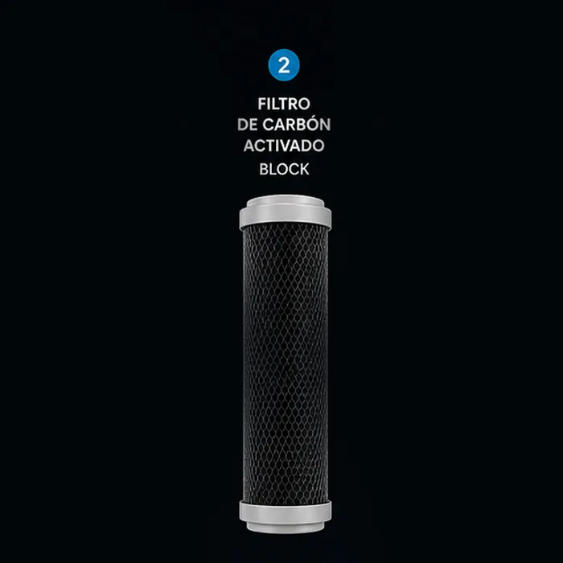
Capa 2 Carbon activado block Reduce cloro, olor, sabor y compuestos organicos no deseados.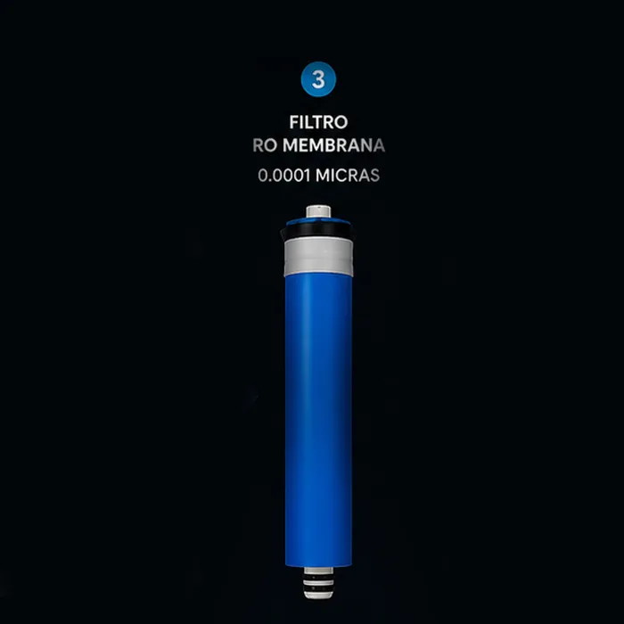
Capa 3 Membrana interna Filtracion fina para reducir solidos disueltos y contaminantes.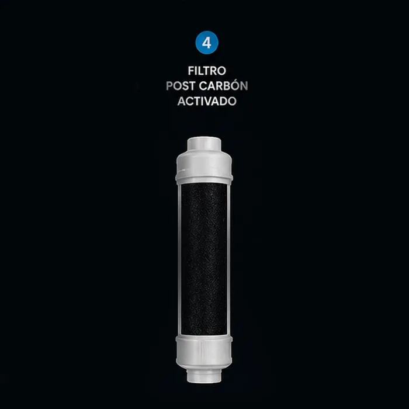
Capa 4 Post carbon Mejora el sabor final y reduce olores residuales.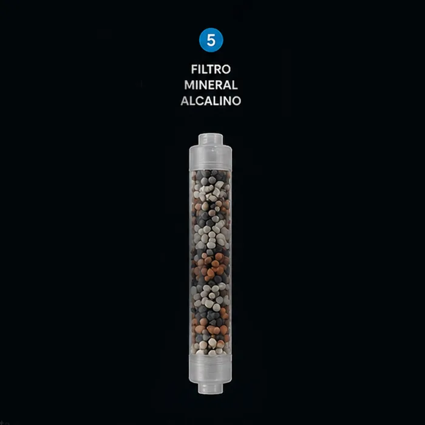
Capa 5 Mineral alcalino Aporta minerales y ayuda a elevar el pH del agua final.
Propuesta para inversionista
Bs 100.000 para ampliar el lote y proyectar Bs 170.000.
La inversion no cubre todo el proyecto: se suma al capital que ya se esta moviendo para traer mas unidades. Ese aporte permite ampliar el lote, acelerar la importacion y aumentar el inventario disponible para venta.
Bs 100.000capital de inversion
Bs 70.000ganancia bruta estimada
Bs 170.000capital + utilidad proyectada
Plazo objetivo: 7 mesestiempo estimado para importar, vender y cerrar el ciclo.
Aporte para ampliar loteel capital se convierte en mas producto fisico vendible.
Control por lotecompra, venta, gastos y utilidad se pueden medir por unidad.
Capacidad comercial actual
No partimos desde cero: ya existe estructura para vender.
Actualmente cuento con call center, equipo de ventas y canales activos en redes sociales. La inversion permite aumentar inventario para aprovechar una estructura que ya puede captar prospectos, atender consultas y cerrar ventas.
Call centerseguimiento y cierre por llamada
Redescaptacion por contenido y anuncios
Ventasequipo para convertir interesados
Atencion inmediatalos prospectos reciben respuesta, explicacion y seguimiento.
Canales de demandaredes sociales para generar trafico y conversaciones medibles.
Proceso comercialregistro de interesados, seguimiento y control por etapa.
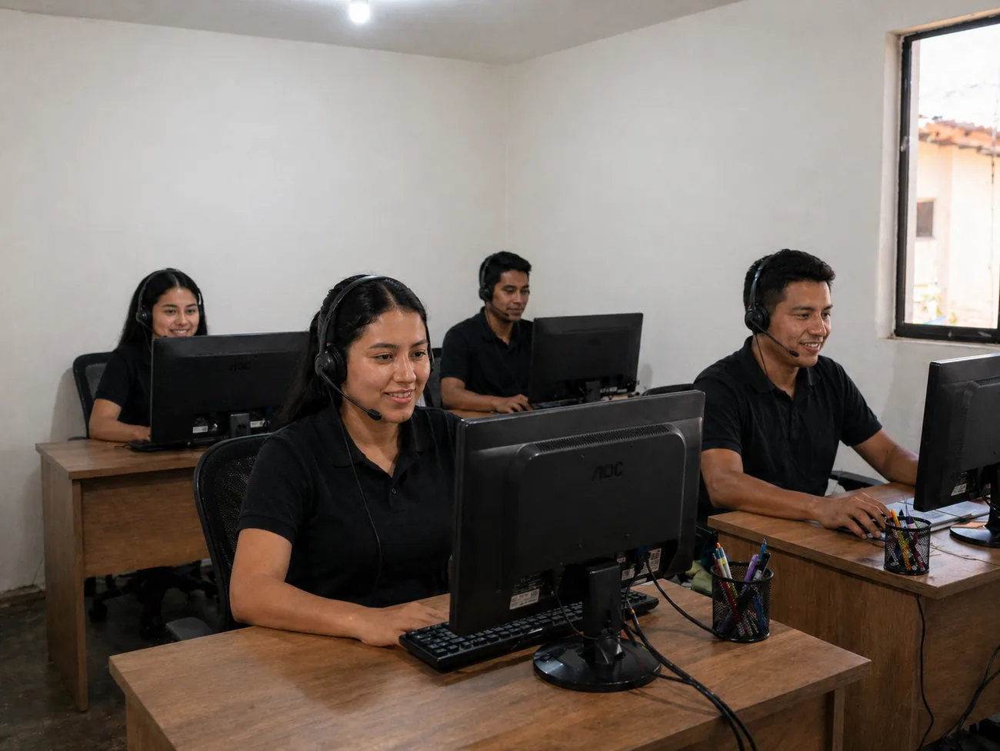
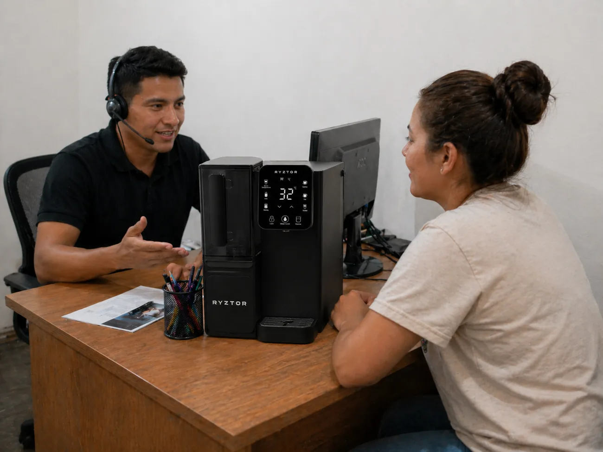
Vendedores en campo
Ventas uno a uno con capacitacion constante.
Ademas del call center, cuento con vendedores que trabajan de forma directa: explican el producto, hacen demostraciones, levantan objeciones y aprenden el guion comercial para vender con mayor consistencia.
1 a 1venta directa y demostracion
Demoagua, sabor, filtros y TDS
Capacitacionmejora continua del equipo
Vendedores activospersonas enfocadas en explicar, mostrar y cerrar.
Entrenamiento constantecapacitacion en producto, objeciones, precio y seguimiento.
Cierre presencialla demostracion uno a uno aumenta confianza y conversion.
La demostracion vende
La venta empieza cuando prueban agua sin sabor a cloro.
En MLM gana el producto que la persona siente en la boca. Sirves un vaso, comparas olor, comparas sabor y explicas: filtra, limpia, alcaliniza y remineraliza. Es una demostracion simple y poderosa.
60spara captar atencion
1vaso para abrir conversacion
5argumentos faciles
Guion primera hora
La reunion debe oler, saborear y demostrar limpieza.
La primera hora no es teoria. Es agua de grifo contra agua purificada: olor a cloro, sabor a cloro, filtracion RO, alcalinizacion y minerales. La gente entiende el beneficio en el primer vaso.
Minuto 0-10Oler agua del grifo vs purificada
Minuto 10-25Probar sabor: menos cloro, mas frescura
Minuto 25-40Explicar RO, alcalinizacion y minerales
Minuto 40-60Cerrar: hogar limpio o negocio duplicable
MLM exagerado
Una familia siente la diferencia. Una red la multiplica.
El mensaje es facil de duplicar: agua limpia, sin olor a cloro, sin sabor pesado, alcalinizada y con minerales. Sirve para hijos, cafe, te, cocina, visitas, oficina y cada recomendacion abre otra demostracion.
ClienteQuiere quitar cloro, olor y mal sabor
AnfitrionInvita a probar agua mas fresca
SocioDuplica la prueba vaso contra vaso
LiderEntrena beneficios y cierres semanales
Cierre
“No vendas un filtro. Vende agua limpia, sin olor a cloro, con mejor sabor y minerales.”
Desliza horizontal